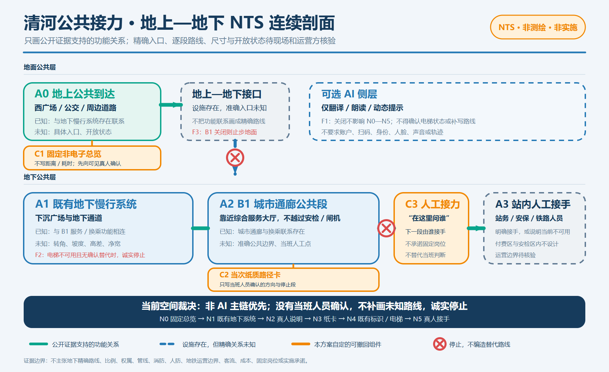

城市设计收敛版 · 双语契约 V1 · v0.1.6
京张共生回路

AI 可以退出，公共服务不能退出
本轮只收敛一个真实小场地、一个普通任务和一条完整非 AI 路径：在清河站付费区与安检区之外，帮助不用手机的人取得 13 号线无台阶换乘的人工说明与接力。
三类证据状态
可核验事实
只来自登记来源或可复算包内数据。
设计响应
可试、可停、可撤、可交接的概念建议。
待确认
官方 GIS、权属、消防、无障碍、许可与责任主体。
三层范围与三核

清河公共接力：地上—地下 NTS 连续剖面
证据支持
公开资料确认地面慢行、地下通道、B1 服务与换乘联系等功能关系。
仍然未知
准确入口、逐段路线、尺度、高差、开放状态、公共边界和人工点位。
设计边界
只提出可撤回的信息与人工接力组件，不进入安检或闸机内。

完整非 AI 路径
普通主链
固定总览、既有地下慢行、向真人说明、纸质路径卡、既有标识与电梯、现有人员接手。
失败也可说明
网络或 AI 关闭不影响主链；电梯或 B1 不可用时只给当次由工作人员确认的替代，否则诚实停止。
AI 禁止事项
不得确认电梯状态、补写未知路线或把手机与扫码设为前提。

三个可撤回组件
C1 固定非电子总览
回答“我在哪里、先去哪里问”，不写未经测量的距离和耗时。
C2 纸质路径卡
由真人圈出当次方向、接力点和不可用段，不采集个人信息。
C3 人工接力标记
明确“向谁问、下一段由谁接手”。

城市设计母题与本轮边界
京张廊道
继续作为统筹研究与公共服务网络母题，不等于已批规划或实施范围。
大钟寺等重点区
保留为概念性重点区，不再作为本轮小场地主线。
AI 原点社区
仅保留历史来源线索；准确位置、权属与现实服务接口未获独立证实。

空间与验证原则
空间系统
保留优先、可逆改造；连续慢行和蓝绿公共空间优先于智能设施。权属、文保、消防和法定条件核验后再深化。
验证边界
当前只验证证据链、非 AI 路径和失败分支，不声称用户测试结果、客流提升、成本或实施排期。

任务覆盖与审阅索引
本页可见入口覆盖：
各入口均可回到提案章节、结构化数据、图件或专业矩阵；索引不替代证据本身。
指标、风险与提交状态
来源与假设
sources.json · assumptions.json · risk.json · spatial.json · visual/assets/qinghe-service-interface.json · metrics.json · compliance_matrix.json
自检状态
目标：DETERMINISTIC · SPATIAL · VISUAL · PROFESSIONAL
本地复核不等于官方 CI、专业批准或实施许可。